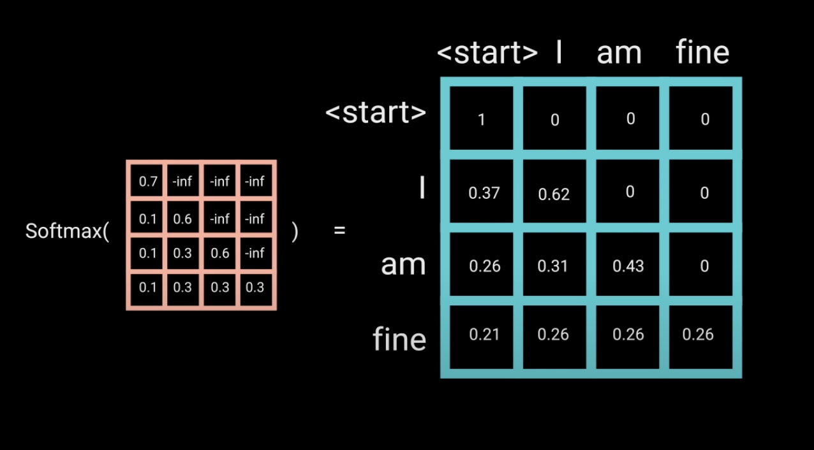

Transformer的Decoder在训练和推理阶段的异同点总结
在训练阶段，decoder的输入是(seq_length,)的目标序列，也就是训练数据集中的GT，经过OutputEmbedding层和PositionalEmbedding层得到(seq_length,model_dim)的序列。
接下来这个序列会经过一个MHA层，对应的q、k和v都是刚才得到的序列本身，此时如果直接计算注意力，那么序列中每一个词既能看到它前面的词的信息，又能看到它后面的词的信息，这样容易导致模型就不学习了，因为在推理阶段，模型是一个词一个词的采用一种自回归方式进行预测的，如果训练时模型已经看到了其所在序列位置后面的词的信息，那么直接读取这些词就好了，无需学习。
因此，需要对q和k计算得到的attention map添加一个mask操作，以保证序列中的每一个词只能看到位于其前面的词的信息。

在走完第一个MHA层之后，还有第二个MHA层，只不过，这里的k和v来自encoder的输出，q来自decoder刚刚上一个MHA层的输出，而计算attention map是q和k的事，k又是一个全局的encoder的输出，q序列的每一个位置的token都可以访问它，不需要担心未来信息泄露的情况，因此这里的MHA在计算注意力时就不需要加mask操作了。
最终，decoder输出一个(seq_length,vocab_size)的序列，最终通过采样来确定这seq_length个词对应词表中的哪些词。
以chatbot为例，来直观感受下训练和推理阶段的异同。
假设用户输入的是’how are you?’，在训练时，那么decoder的输入可能是’
参考：